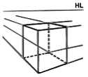
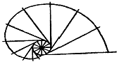
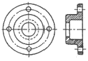
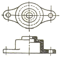
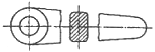
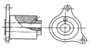
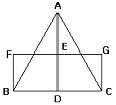
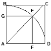
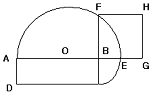
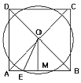

컴퓨터그래픽스운용기능사 (2014-01-26 기출문제)
1과목: 산업디자인 일반
1. 다음 중 실내디자인의 대상 공간이 아닌 것은?
- 도서관
- 사무실
- 도시조경
- 상점
(정답률: 96%)

2. P.O.P 광고의 기능에 관한 설명이 틀린 것은?
- 판매점에 온 소비자에게 브랜드나 브랜드 네임을 알릴 수 있다.
- 신제품을 알리는데 좋으며 신제품의 기능, 가격을 강조 한다.
- 상품에 대한 자세한 설명은 충동구매를 방지한다.
- 점원의 설명보다 우수한 대변인이 될 수 있다.
(정답률: 83%)
3. 디자인에서 이미지를 전달하기 위한 표현기법의 첫 단계는?
- 모델링(Modeling)
- 포토 리터칭(Photo Retouching)
- 렌더링(Rendering)
- 아이디어 스케치(Idea Sketch)
(정답률: 93%)
4. 잡지광고의 종류 중 뒤표지에 실리는 광고는?
- 표지 1면 광고
- 표지 2면 광고
- 표지 3면 광고
- 표지 4면 광고
(정답률: 67%)
5. 디자인 조건과 특성이 옳게 나열된 것은?
- 합목적성, 심미성 : 지적 활동, 합리적 요소 형성
- 경제성, 독창성 : 지적 활동, 합리적 요소 형성
- 심미성, 독창성 : 감성적 활동, 비합리적 요소 형성
- 합목적성, 경제성 : 감성적 활동, 비합리적 요소 형성
(정답률: 65%)
6. 잘 그려진 포스터인데도 불구하고 보기 어렵고 내용 전달이 모호하다면 그 포스터는 무엇이 문제인가?
- 경제성
- 기능성
- 독창성
- 심미성
(정답률: 83%)
7. 바코드(Bar Code)는 각 포장 표면에 굵기가 다른 수직선과 그 밑에 숫자로 인쇄된 기호이다. 바코드에 대한 설명이 틀린 것은?
- 계산서의 보관이 용이하다.
- 상품의 가격을 수동으로 찍는 방법보다 정확하다.
- 상점 경영에 합리성이 있다.
- 계산하는 번거로움이 있어 시간이 늦다.
(정답률: 94%)
8. 다음 중 유사, 대비, 균일, 강화 등이 포함되어 나타내는 디자인의 원리는?
- 통일
- 조화
- 균형
- 리듬
(정답률: 68%)
9. 일정한 모듈(module)을 이용하여 만든 가구로, 소비자의 취항에 따라 다양한 형태와 크기의 기구를 만들 수 있어 주거 이동이 잦은 현대인의 생활에 적합한 구조별 가구의 종류는?
- 이동식 가구
- 붙박이식 가구
- 조립식 가구
- 고정식 가구
(정답률: 87%)
10. 제품디자인에 대한 설명 중 틀린 것은?
- 과학, 기술, 인간, 환경 등이 공존하는 분야이다.
- 생산 가능한 형태, 구조, 재료 등을 고려하여 설계해야 한다.
- 인간과 자연의 매개 역할로서의 도구이다.
- 인간의 감성에 맞춘 순수 예술이어야 한다.
(정답률: 90%)
11. 선의 조형적 표현 방법 중 단조로움을 없애주고 흥미를 유발시켜 활동적인 분위기를 조성하지만 지나치게 많이 사용하면 불안정한 느낌을 주는 것은?
- 수직선
- 수평선
- 사선
- 포물선
(정답률: 83%)
12. 다음 중 스케치의 역할이 아닌 것은?
- 아이디어를 구상에 따라 다양하게 표현한다.
- 형태나 색채, 재질감을 실물과 같이 충실하게 표현한다.
- 이미지(Image)를 구체적으로 표현하는 작업이다.
- 의도된 형태를 발전, 전개시킨다.
(정답률: 71%)
13. 기계제품의 질을 향상시키기 위해 독일공작연맹을 결성한 중심인물은?
- 윌리엄 모리스(W. Morris)
- 무테지우스(H. Muthesius)
- 이텐(J. Itten)
- 몬드리안(P. Mondrian,)
(정답률: 62%)
14. 실내디자인을 구성하는 실내의 기본 요소로만 연결된 것은?
- 가구, 조명, 문
- 바닥, 벽, 천장
- 바닥, 벽, 차양
- 가구, 바닥, 창
(정답률: 94%)
15. 그림에 해당되는 착시는?
- 길이의 착시
- 크기의 착시
- 방향의 착시
- 명도의 착시
(정답률: 94%)
16. 다음 중 시장의 확보 및 확대를 위한 전략과 관련이 없는 것은?
- 시장의 세분화
- 제품의 차별화
- 제품의 다양화
- 제품의 단순화
(정답률: 81%)
17. 패키지의 기능 및 역할 중 '개폐의 용이, 쉬운 조작, 적절한 무게, 누구나 사용“ 등과 관련한 것은?
- 편의성
- 보호성
- 명시성
- 안전성
(정답률: 90%)
18. 유사한 배열이 방향성을 지니고 하나의 묶음처럼 지각되어 공동운명의 법칙이라고도 부르는 게슈탈트 원리는?
- 근접성의 원리
- 친숙성의 원리
- 폐쇄성의 원리
- 연속성의 원리
(정답률: 57%)
19. 선의 조형 효과에 대한 설명 중 틀린 것은?
- 선의 조밀한 변화로 깊이를 느낀다.
- 많은 선의 연속된 근접으로 면을 느낀다.
- 선을 끊음으로서 입체를 느낀다.
- 선을 일정하게 반복하면 패턴을 얻을 수 있다.
(정답률: 83%)
20. 흑백의 강렬한 조화와 이국적 양식, 쾌락적, 생체적, 여성적, 유기적 곡선, 비대칭 구성이 특징이며 윌리엄 브레들리, 오브리 비어즐리, 가우디 등이 대표작가인 디자인 사조는?
- 옵아트
- 구성주의
- 아르누보
- 아르데코
(정답률: 68%)
2과목: 색채 및 도법
21. 동시대비에 대한 설명 중 틀린 것은?
- 두 색 이상을 동시에 볼 때 생기는 대비이다.
- 색의 3속성 차이에 의해서 나타나는 대비 현상이다.
- 동일한 공간 영역에서 먼저 본 색의 영향으로 생기는 대비이다.
- 자극과 자극 사이의 거리가 멀어질수록 대비 현상은 약해진다.
(정답률: 65%)
22. 대칭형인 물체의 외형과 내부의 구조 및 형태를 동시에 표시하는 단면도는?
- 반 단면도
- 계단 단면도
- 온 단면도
- 부분 단면도
(정답률: 62%)
23. 푸르킨예 현상의 설명과 거리가 먼 것은?
- 새벽녘의 물체들이 푸르스름하게 보인다.
- 조명이 어두워지면 적색보다 청색이 먼저 사라진다.
- 푸르킨예 현상을 이용해 비상구 표시를 초록으로 한다.
- 낮에는 파란 공이 밤이 되면 밝은 회색으로 보인다.
(정답률: 81%)
24. 치수기입 시 치수 숫자와 기호의 표현이 잘못된 것은?
- 354.62
- 3t
- 185°
- □10
(정답률: 48%)
25. 빛을 감지하는 감광 세포인 간상체가 지각할 수 있는 색은?
- 빨강
- 노랑
- 보라
- 회색
(정답률: 64%)
26. 다음 중 일반색명은?
- 베이지
- 복숭아색
- 어두운 회색
- 밤색
(정답률: 72%)
27. 색의 감정에 대한 설명이 옳은 것은?
- 채도가 높은 색은 탁하고 우울하다.
- 채도가 낮을수록 화려하다.
- 명도가 낮은 배색은 어두우나 활기가 있다.
- 명도가 높은 색은 주로 밝고 경쾌하다.
(정답률: 86%)
28. 빨강의 색상 기호를 먼셀 색체계에서 “5R 4/14”이라고 표시 할 때, “5R”이 나타내는 것은?
- 명도
- 색상
- 채도
- 색명
(정답률: 80%)
29. T자와 삼각자를 이용하는 방법으로 틀린 것은?
- T자는 왼손으로 머리부분을 잡고 제도판에 대어 이동한다.
- 기준을 잡은 T자 위쪽으로 삼각자를 놓고 사용한다.
- 수직선은 T자 위에 삼각자를 놓고 위에서 아래로 긋는다.
- 빗금을 그을 때는 T자와 2개의 삼각자를 이용하여 사선방향으로 긋는다.
(정답률: 55%)
30. 명도와 채도가 유사한 동일 색상 배색에서 나타나는 이미지는?
- 동적인 이미지
- 화려한 이미지
- 정적인 이미지
- 명쾌한 이미지
(정답률: 67%)
31. 동일한 주황색이라도 빨간색 배경 위의 주황색은 노란색 기미가, 노란색 배경 위의 주황색은 붉은 색 기미를 많이 보이는 것과 관련한 대비현상은?
- 보색대비
- 색상대비
- 채도대비
- 명도대비
(정답률: 69%)
32. 다음 중 생동감, 열정, 활력으로 정열적인 이미지의 배색은?
- 검정, 회색
- 녹색, 파랑
- 빨강, 주황
- 노랑, 하양
(정답률: 92%)
33. 두 색이 서로의 영향으로 본래의 색보다 채도가 높아지고 선명해지며, 서로 상대방의 색을 강하게 드러내 보이게 되는 대비는?
- 동시대비
- 계시대비
- 연변대비
- 보색대비
(정답률: 65%)
34. 가시광선 중 파장범위가 가장 긴 색은?
- 빨강
- 노랑
- 파랑
- 보라
(정답률: 74%)
35. 투시도법의 기본 요소는?
- 대상, 형상, 거리
- 색채, 명암, 음영
- 형태, 그늘, 그림자
- 시점, 대상물, 거리
(정답률: 80%)
36. 현재 한국산업표준으로 채택하여 사용되고 있는 색체계는?
- 오스트발트 색체계
- 먼셀 색체계
- CIE 표준 색체계
- 문스펜서 색체계
(정답률: 75%)
37. 그림과 같이 물체를 표현하는 투시법은?

- 사각투시
- 유각투시
- 평행투시
- 삼각투시
(정답률: 46%)
38. 그림과 같이 원기둥에 감긴 실의 한 끝을 늦추지 않고 풀어 나갈 때, 이 실의 끝이 그리는 곡선은?

- 등간격 곡선
- 인벌류트 곡선
- 사이클로이드 곡선
- 아르키메데스 곡선
(정답률: 44%)
39. 그림 중 회전 단면도는?




(정답률: 52%)
40. 다음 평면도법 중 '같은 면적 그리기'가 아닌 것은?




(정답률: 50%)
3과목: 디자인 재료
41. 다음 중 불규칙한 곡선을 그릴 때 사용하는 것은?
- 템플릿
- 운형자
- 비례 디바이더
- 비임 컴퍼스
(정답률: 59%)
42. 인쇄물의 표면에 박막을 씌워 오염을 방지하고, 내수성과 광택을 향상시키는 후가공은?
- 엠보싱(Embossing)
- 라미네이팅(Laminating)
- 핫 스탬핑(Hot Stamping)
- 오버 코팅(Over Coating)
(정답률: 47%)
43. 입자가 거칠고 점력이 부족하나 불순물 함량이 적어 백색이 많은 1차 점토는?
- 내화점토
- 석기점토
- 벤토나이트
- 고령토
(정답률: 46%)
44. 옥외 등의 내수합판이나 목제품의 접합에 널리 사용되는 접착제로, 사용가능 시간이 길며 고온에서 즉시 접합되는 접착제는?
- 페놀계 접합제
- 에폭시계 접합제
- 아크릴계 접합제
- 멜라민계 접합제
(정답률: 36%)
45. 펄프의 제조 방법에 의한 분류 중 원료를 약품처리와 기계적 처리를 범용하여 만든 펄프는?
- 세미케미컬 펄프
- 쇄목 펄프
- 화학 펄프
- 기계 펄프
(정답률: 40%)
46. 다음 중 유기재료에 속하는 것은?
- 목재
- 강철
- 유리
- 도자기
(정답률: 65%)
47. 필름을 인화하였을 때 검은 흠집선이 생기는 원인은?
- 네거티브 캐리어 위의 먼지
- 필름의 유제층이나 필름 뒷면의 흠집
- 오랜 시간 현상액에 둔 경우
- 외부에서 암실로 들어온 빛
(정답률: 61%)
48. 스트리퍼블(strippable) 페인트의 설명으로 틀린 것은?
- 도장재의 더러움 방지를 위해 일시적으로 사용한다.
- 필요할 때 간단히 벗겨낼 수 있다.
- 비닐계 수지이다.
- 얇게 도장해야 한다.
(정답률: 55%)
4과목: 컴퓨터 그래픽스
49. 파일 포맷에 대한 설명이 틀린 것은?
- PostScript – 어떤 출력장치에도 왜곡됨 없이 그래픽 이미지를 자유롭게 표현해 줄 수 있는 저장 방식
- PICT - 윈도우즈 운영체제에서 지원해주는 방식으로 비트맵 이미지의 저장 방식
- PNG - 256 컬러 외에 1600만 컬러 모드로 저장이 가능하고 GIF보다 10~30% 뛰어난 압축률을 제공
- TIFF - 무손실 압축방식을 사용하며, OS에 의존하지 않고 사용 가능
(정답률: 49%)
50. 애니메이션과 동영상 파일 포맷이 아닌 것은?
- CPT
- FLC
- GIF
- SWF
(정답률: 45%)
51. 명도 요소와 빨강~녹색, 노랑~파랑에 이르는 2가지의 색상 축을 기준으로 색상을 표시하는 컬러 방식은?
- Lab 모드
- RGB 모드
- HSB 모드
- CMYK 모드
(정답률: 56%)
52. 컴퓨터 작동 시 정보를 기억할 수 있고 전원이 꺼지면 지워지는 메모리는?
- Random Access Memory
- Read Only Memory
- Hard Disk Memory
- Floppy Memory
(정답률: 62%)
53. GUI를 바탕으로 하는 운영체제에서 제공하는 휴지통의 설명 중 틀린 것은?
- 시스템에서 완전히 삭제하기 전에 잠시 보관하는 장소이다.
- 휴지통에 들어있는 파일은 디스크의 공간을 차지하지 않으므로 디스크 관리에 용이하다.
- 휴지통에 들어있는 파일은 휴지통을 비우기 전까지는 언제든지 복원할 수 있다.
- 일부 시스템 파일은 휴지통에 버릴 수 없도록 안전장치를 해놓고 있다.
(정답률: 83%)
54. 컴퓨터 디지털 신호의 기본적인 0과 1의 전기적 신호체계를 의미하는 용어는?
- Binary
- Bit Map
- Frame
- Vector
(정답률: 51%)
55. 다음 중 스캐너에 대한 설명으로 틀린 것은?
- 스캐너는 반사된 빛을 측정하기 위해 CCD라는 실리콘칩을 사용한다.
- 해상도의 단위는 LPI이다.
- 입력된 파일의 크기를 작게 하거나 원하는 영역만 스캔할 수도 있다.
- 색상과 콘트라스트를 더욱 정확하게 조절하기 위해 감마보정이라는 방법을 사용한다.
(정답률: 61%)
56. 입력장치에 대한 설명이 틀린 것은?
- 컴퓨터 작업의 첫 단계이다.
- 컴퓨터 내부로 외부의 데이터를 전달한다.
- 정보를 기억하고, 기억한 정보를 처리한다.
- 키보드, 마우스, 스캐너 등이 입력장치이다.
(정답률: 68%)
57. 3D 오브제의 표면을 사실적으로 표현하기 위하여 프로그램 상 만들어진 무늬와 2D 이미지를 적용하여 사실적인 이미지를 만들 수 있도록 하는 작업은?
- 포토리얼(Photoreal)
- 안티앨리어싱(Anti-Aliasing)
- 매핑(Mapping)
- 패치(Patch)
(정답률: 73%)
58. 해상도(Resolution)에 관한 설명 중 옳은 것은?
- 화면에 이미지를 얼마나 선명하게 표현할 수 있는지를 결정한다.
- 화면을 구성하는 최소 화소 단위를 말한다.
- 해상도가 높을수록 이미지의 질은 떨어진다.
- 해상도는 포스트스크립트 방식에서만 적용된다.
(정답률: 73%)
59. 베지어 곡선(Bezier Curve)에 대한 설명이 틀린 것은?
- 만들어지는 선분은 양 끝의 제어점(Control Point)을 통해 만들어진다.
- 제어점의 위치만으로 정의되기 때문에 제어성이 양호하다.
- 1개 조정점(Control Point)의 변경은 곡선 전체에 영향을 미친다.
- 수학적 데이터로 이미지 처리 및 리터칭에 주로 사용된다.
(정답률: 44%)
60. C.I.P(Corporate Identity Program)를 제작할 때 가장 유용하게 쓰이는 벡터 이미지용 소프트웨어는?
- 포토샵(photoshop)
- 스트라타 스튜디오(Strata Studio)
- 일러스트레이터(Illustrator)
- 페인터(Painter)
(정답률: 83%)